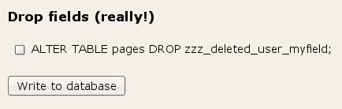
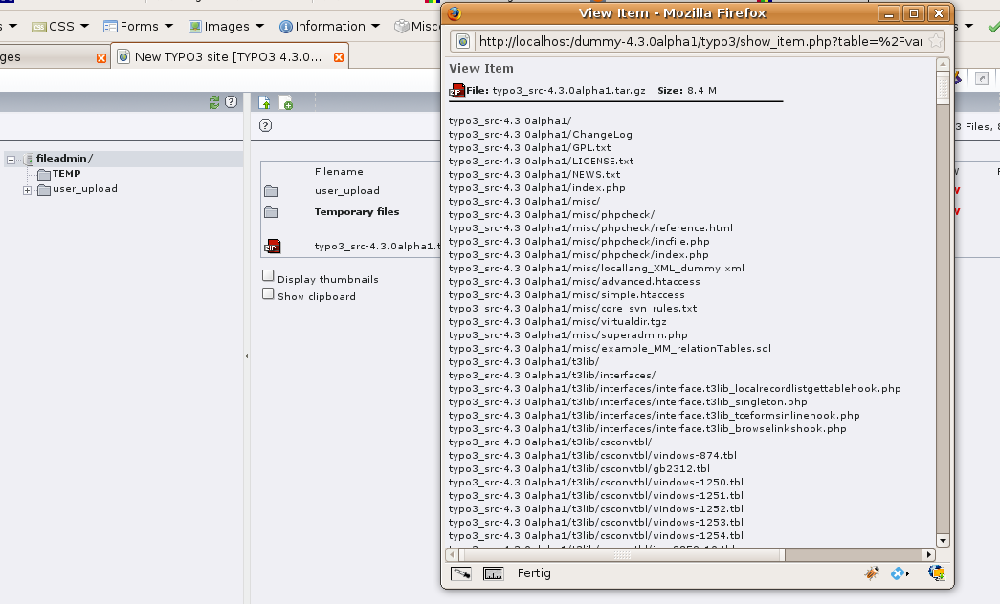

Extension
Key:
Language:
Keywords:
Copyright
2000-2010, originally by
http://forge.typo3.org/projects/show/team-docteam
This document is published under the Open Content License
available from http://www.opencontent.org/opl.shtml
The content of this document is related to TYPO3
-
a GNU/GPL CMS/Framework available from www.typo3.org
Installation and upgrade of TYPO3 1
Aimed to end newbee agony... 4
Installing TYPO3 - Quick install 5
Very Important:Changing Img Processing settings 8
Which package and which fileformat? 9
Using the source distribution effectively 10
The “superadmin.php” script 16
This manual should give you an introduction on how to install or upgrade your TYPO3 installation. It's meant for beginners with TYPO3 who will work as administrators for their projects.
Hopefully this manual will help you. If you find errors, typos or just think there are things missing please file a bug report at bugs.typo3.org category Documentation. Thx!
The Install Tool is provided in order to simplify installation and bug-tracking.
If you go to your fresh TYPO3 installation for the first time you will be automatically redirected to the install tool. If that for some reason does not work for you, you can enter the install tool directly via typing http://www.example.com/typo3/install.
Figure
1 The Install Tool
You must enter a password to access the install-tool. The password is set in localconf.php:
$TYPO3_CONF_VARS["BE"]["installToolPassword"] = "bacb98acf97e0b6112b1d1b650b84971";
If you insert this line in localconf.php, the password to the Install Tool is 'joh316'. Changing the password can be done from inside the tool.
Note: Quick Install allows you to configure the vital information for TYPO3 in three simple steps. It's meant for newbees and is automatically active if you download one of the zip-packages with complete sites. A “complete site” is a combination of the source-code and site-specific folders. Therefore this would not apply for the TYPO3 source-code archives but only such downloads as the testsite or other out-of-the-box TYPO3 applications.
Download the matching package for your requirements from http://typo3.org/download/packages/ (If you are not sure which package you should choose read the section “Which package and which file format” in the in-depth part of the manual).
Upload the contents of this package to your webserver. Tip: The package contains thousands of files, so if you're able to unzip or untar the file on the server, better do that!
Create a file called “ENABLE_INSTALL_TOOL” in /path/to/your/site/typo3conf/ to enable the install tool.
Hit the site with your browser and follow the Install Tool (http://www.example.com/typo3/install/index.php?mode=123&step=1). The Install Tool will help you to 1) setup MySQL username/password/database, 2) dump any default database content and 3) check the configuration of your PHP-installation for compatibility. This is outlined below.
After the Install Tool, you should seriously consider to protect the folder typo3/install/ with a password or simply delete the ENABLE_INSTALL_TOOL file. The file gets deleted automatically after 1h.
The Install Tool is located in 'typo3/install/' but should automatically start in “123”-mode with password 'joh316' if you have not set up any database for the site.
In other words, this is what you should see:
Please consider to go into normal-mode with the Install Tool in order to verify all the details of the configuration. Especially the image generation software must be paid attention to!
Starting from version 4.1 TYPO3 uses InnoDB as database engine for several tables. This helps to prevent locks and increases performance. Also InnoDB is more crash-resistant compared to MyISAM. We recommend to review your MySQL configuration and to ensure that your table space has the "autoexpand" option enabled. See MySQL manual for more information about configuring InnoDB. If you do not have InnoDB enabled, MySQL will use MyISAM automatically and you don't need to take any actions.
When you change the settings for Image Processing (in normal mode) you must take into account that old images may still be in typo3temp/ folder and prevent new files from being generated! This is especially important to know, if you're trying to set up image processing for the very first time.
The problem is solved by clearing the typo3temp/ folder. Also make sure to clear the cache_pages table.
TYPO3 is available in various “packages” and within each package normally a .zip or .tgz distribution (targeted at Windows- and Unix-server users respectively).
Here are some examples:
typo3_src
This
is the source files of the TYPO3 CMS which is mandatory in all TYPO3
systems. This is how the files might be named:
typo3_src-4.2.3.tgz (Contains “symlinks”, so download only for Unix servers where you are able to create symlinks!)
typo3_src-3.2.3.zip (This is the the safe-bet to download if the tgz-file is not your cup of tea. Works on both Unix and Windows servers, but contains a lot of redundant files.)
testsite
The
testsite is a “complete site” with a lot of default content for
testing and learning. It's
advisable to download the testsite to test TYPO3.
This is how the filenames might be:
testsite-3.8.0.zip (This is both the source and site-specific files and is ready to upload, unzip and run out-of-the-box! Please try this if you are a newbee! Can be used on both Unix and Windows servers)
testsite-3.8.0.tgz (This does not contain the source files but only symlinks to the source following the generally recommended practice of symlinks. This is for experienced TYPO3 users only
This is a out-of-the-box package for ftp-upload. It is integrated with a testsite that will help you to get started with TYPO3. It contains these files and folders:
Figure
2 Contents of testsite package
media/, t3lib/, tslib/, typo3/ contains the TYPO3 source-code, files, images and scripts distributed by TYPO3.
index.php is the main script for the website frontend (same as tslib/index_ts.php).
showpic.php is a document used to display images on request (same as tslib/showpic.php).
clear.gif is a 1x1 clear-pixel gif-file. Used many places.
All these files are a part of TYPO3s core, you should never change them and you can write protect them if you like! They are the ones you must upgrade when you install a new version of TYPO3.
Don't change any of these!
fileadmin/ contains files of your choice, local to the website. You can put templates, user uploads, external scripts, external html and images here. Also used to store uploaded files by default.
typo3temp/ should be empty from the beginning. But gradually temporary files will appear here. The directory must be writeable.
uploads/ contains folders used to store documents attached to database records - hence they should be writeable!
typo3conf/ contains configuration for the local site, eg. localconf.php, extTables.php-files, user-defined modules, user-defined classes etc.
typo3conf/localconf.php contains local configuration for your site.
Yes, just add whatever you like. Why not?
The tgz distribution is the 'source code only' and is not accompanied with any testsite. It's also intended for Linux/UNIX filesystems because the .tgz-file contains relative symlinks.
Figure
3 folders and files with arrow represent the symlinks
The main point is - compared to the .zip distribution - that the source directory is stored once in the file-structure (possibly writeprotected) on the UNIX server and then every site using this TYPO3 version symlinks the proper folders to the source. Thus you save space because you avoid redundant files and get easy maintenance if you do it right.
t3lib/, tslib/, tslib/media, and typo3/ are the main directories which should be symlinked to the actual website running TYPO3.
misc/ contains information from previous TYPO3 releases.
files in the root: Documents related to the current release, eg. changelog.
As I wrote the source distribution provides a minimum of space usage and maintenance if used intelligently. This is my suggestion:
Extract the .tgz file somewhere on your server
From the directory holding the root-directory of you site, create a symlink to the source folder. Call it 'typo3_src':
Figure
4 Symlinks
Afterwards create links to the index.php file
and the t3lib and typo3 folder as shown in figure 8. Note that those
just link to the first created typo3_src link. (In most current
available packages these symlinks are included by default so you
just have to create / change the typo3_src link to your source
directory)
The advantages of this approach is apparently that when you wish to upgrade to a new TYPO3 version, you simply change one symlink and every distributed TYPO3 file is upgraded instantly - on as many sites as you like!
After switching the sources around you have to enter the Install Tool of every single site that is sharing the upgraded source and update any changes that are required in the database and clear the cache tables.
The intension is to make upgrades backwards compatible. But sometimes you may experience changes that affect your website. Normally the change is small, but always backup the database and files before an upgrade and possibly also test the upgrade on another server first.
If you conform to the recommended database-structures and don't use custom tables.php-files, it should be quite easy to upgrade.
Normally months passes by between new TYPO3 versions are out. But in between there are often a lot of previews, every week sometimes! Or you can upgrade your source on a development server continuously from SVN.
So what's the difference and what can you expect from them?
A “new version” is a new set of
“official” packages including the source as tgz/zip, the
testsite as tgz/zip, the dummy-tgz, the quickstart-zip etc. Such
packages will be announced on TYPO3.org and found for download at
http://www.typo3.org/download/.
You can expect a “new version”
to be tested good enough for production sites. (Still, make sure to
read the changelog for “!!!” marked lines and the
news.txt and make a test upgrade on a separate server first to
make sure no changes affects your site negatively!)
A “preview” is simply a tgz-snapshot of todays work on TYPO3! You can normally expect these to work perfectly, but their completeness is not guaranteed to the same degree as with the “new versions”. The “previews” are recommended to download and test and give feedback from. Previews are usually separated into “alpha”, “beta” and “RC” releases.
When new versions of TYPO3 arrive, you should always follow any additional upgrade information carefully. You might also need to skim the included changelog to see if any features affects the way your site works (look for lines prepended with “!!!” - those are the really important!)
Basically these steps are involved in updating your TYPO3 site:
Make a backup of both uploads/ folder and database. Also you may prefer to upgrade a copy of your site first if there has been a lot of changes and some of them seems to interfere with your site. See the changelog.
Upgrade the distributed source files to the new version.
.tgz:
If you're using the source-distribution in the .tgz file, please see right above where details on symlinking is explained and replace your source directory with the new one.
.zip:
If you're using the .zip distribution, then download the zip source package and copy (and overwrite) it into your TYPO3 folder.
Enter the Install Tool at '.../typo3/install/' on your TYPO3 site.
(If you have password/access problems, please see the section about the Install Tool later in this document).
Go to the “Database Analyser” section, check that the database configuration is correct.
Then click “COMPARE” at the “Update required tables” header:
Now all ext_tables.sql files from core and extensions are read and compared to your current database tables and fields. Any discrepancies will be shown and you'll be able to execute queries sufficient to upgrade your database so it corresponds to the structure required for the new TYPO3 version.
Notice: Be aware if you have deliberately added fields and/or tables to your TYPO3 database for your own purposes! Those tables and fields are removed only if you mark them to be deleted of course, but please be alert that you don't overlook them!
Remove unused fields (and tables) if you wish and click “Write to database”
On the next screen you'll see that all add and changed fields are done properly since they don't show up again. However the fields and tables we chose to drop were renamed first. Now you can consider to let them be and delete them lateron when you're sure you're not going to need them. Or you can just go on drop them finally.

Finally, you should see this:
You may have added your own fields to the database tables or you may have added tables on your own. Don't delete those (of course)!
If you're smart, you name user defined tables and fields prefixed “user_”. Then they'll show up with a little warning icon, so you can easier distinguish them from fields and tables which should be dropped. (see Figure 11)
Tables that are defined in extensions will automatically be managed and you don't have to care about them. They are respected fully.
The table 'static_template' (and some other “static_” tables) contains information that you should never alter yourself. The point is that this tables contains static information distributed with TYPO3 releases. Follow these steps to upgrade the table with the newest information.
Go to the “Database Analyser” section.
Then click “IMPORT” at the “Dump static data” header:
Then tick the check box “Import the whole file...” and click “Write to database”:
...
and you should see (something like) this without errors:
You should always clear the cache-tables.
You might also consider clearing the backend user preferences if something in the upgrade requires this. Everything can be done from the Install Tool.
In typo3conf/ you will most likely find cached files for ext_localconf.php and ext_tables.php files from extensions. These must be removed as well.
So all files in typo3conf/ directory which are named “temp_CACHED_*_ext_localconf.php” or “temp_CACHED_*_ext_tables.php” must be removed!
An easy way to clear these files are pressing the link on the top right side in the backend when logged in as admin user:
However, if you see more than two of these “temp_CACHED_” files in typo3conf/ only two of them will be removed by this method and you have to remove the rest with either the superadmin.php script, the “extdeveval” extension or manually!
Look through the changelog and the NEWS.txt file in your TYPO3 root folder. It's a good place to get an idea about new functions you might need or be interested in.
Especially pay attention to the lines starting with “!!!”. They are important because they are about changes that may affect some websites.
In the folder “misc/” of the core you will find “superadmin.php” script. You can read inside how to use it. I will just mention it here because it is an indispensable tool when you want to upgrade many sites located in subfolders on the same level in the file system and which all shared the same source.
As the screenshot below shows you enter the “UPDATE” section of the tool. This will show you a list in the left frame of the sites that has been found on your server. Then you simply click all the links there from top-down and they will take you directly to the 4-5 mandatory steps involved in upgrading:
Clearing the extension cache files of typo3conf/
Upgrading database tables structure
Importing static table data (that might have been updated)
Clearing cache tables
Possibly, logging in in the backend.
The “superadmin.php” tool also features statistics that are nice for administrators including shortcuts to admin logins.
However it is a highly dangerous tool if you leave it unprotected on the server!!! Don't mess with the security of this baby! Protect it good, preferably insert an “exit;” statement in the top when not used and put a .htaccess password on its folder!
The PHP settings “safe_mode” and “open_basedir” seems to be popular ways for ISPs to configure their public servers. The point is to prevent customers from peeking in and changing each others PHP applications. This is good of course but can make systems like TYPO3 choke on certain features.
This section tries to describe some experiences with safe_mode and open_basedir. I (kasper) am not an expert in this but at least this is my findings on these issues. It all applies and was tested with TYPO3 version 3.6.0
; ; Safe Mode ; safe_mode = On ; By default, Safe Mode does a UID compare check when ; opening files. If you want to relax this to a GID compare, ; then turn on safe_mode_gid. safe_mode_gid = Off ; When safe_mode is on, UID/GID checks are bypassed when ; including files from this directory and its subdirectories. ; (directory must also be in include_path or full path must ; be used when including) safe_mode_include_dir = ; When safe_mode is on, only executables located in the safe_mode_exec_dir ; will be allowed to be executed via the exec family of functions. safe_mode_exec_dir = /www/htdocs/smexec/ ; open_basedir, if set, limits all file operations to the defined directory ; and below. This directive makes most sense if used in a per-directory ; or per-virtualhost web server configuration file. This directive is ; *NOT* affected by whether Safe Mode is turned On or Off. open_basedir = /www/htdocs/typo3/
The settings above is what I have tested with. This are some consequences:
Script permissions: When “safe_mode”
is on, all scripts and files must be owned by the same
user as the PHP script is executed as! Generally this seems to cause
trouble for people, but TYPO3 cannot be changed to internally to
make this better - you have to fix the script ownerships.
One
possibility is if “safe_mode_gid” is “On” - then only the
group membership is required to match the one of the PHP-script
execution user.
Working inside site root: “open_basedir” means that PHP cannot read/write files outside of the directory configured, in this case “/www/htdocs/typo3/”. TYPO3 in versions starting with 3.6.0 has been fixed so all file operations on temporary files goes on inside the typo3temp/ folder and never the “/tmp/” folder on the system. So this should not cause trouble.
External programs: “safe_mode_exec_dir” ImageMagick, diff, unzip, tar, pdftotext and whatever external programs are used by TYPO3 must be found in this folder (or have symlinks in there!). It seems like PHP allows to use some “virtual path” a la “/usr/local/php/bin” as an “alias” for this path.
Anyways, my experiences follows next.
Generally, everything in TYPO3 can work under safe_mode and open_basedir as long as the script permissions are correct. Notice, this is not something TYPO3 can do better or worse; for a working TYPO3 system there must be access to writing files and directories in the filesystem and this is done by plain PHP functions.
In my case my webserver runs as the user “www-data” and I'm editing scripts with the user “agentk”. In order to make this work seemlessly I follow this permission scheme:
agentk is a member of the group “www-data” and “www-data” is a member of group “agentk”
All files are owned by “agentk” and group is “www-data” - or vice versa. If you have a single user as owner/group on scripts they may not be able to access files and folders owned by the other user. In other words, even if you set “safe_mode_gid” to “on” PHP scripts with ownership “agentk.agentk” cannot access any file with ownership “www-data.www-data” even if “agentk” and “www-data” is included in the group of the other.
All files and directories that require write access has the permission 775 so the group can write.
If this setting is set you should not experience any problems but you will probably not be able to mount paths outside of this path. TYPO3 is in fact able to mount any filepath on the server but by this setting that will be prevented effective; all you can do is relative operations, which should be OK for most cases.
In my settings this was “/www/htdocs/smexec/” and inside of this directory on my Linux box I put symlinks to various programs that TYPO3 uses. You should/can do the same on your system:
drwxr-xr-x 2 root root 4096 Jan 28 18:43 ./ drwxr-xr-x 18 httpd httpd 4096 Jan 28 17:27 ../ lrwxrwxrwx 1 root root 22 Jan 28 17:29 combine -> /usr/X11R6/bin/combine* lrwxrwxrwx 1 root root 22 Jan 28 17:29 convert -> /usr/X11R6/bin/convert* lrwxrwxrwx 1 root root 23 Jan 28 17:29 identify -> /usr/X11R6/bin/identify* lrwxrwxrwx 1 root root 13 Jan 28 18:15 diff -> /usr/bin/diff* lrwxrwxrwx 1 root root 8 Jan 28 18:19 tar -> /bin/tar* lrwxrwxrwx 1 root root 14 Jan 28 18:28 unzip -> /usr/bin/unzip* lrwxrwxrwx 1 root root 16 Jan 28 18:21 pdfinfo -> /usr/bin/pdfinfo* lrwxrwxrwx 1 root root 18 Jan 28 18:21 pdftotext -> /usr/bin/pdftotext* -rwxr-xr-x 1 3764 users 307841 Jan 7 08:36 tidy*
The point is that TYPO3 is allowed to execute external binaries only if found in this folder! The symlink is enough, you don't have to actually move the programs.
Theoretically you should now set up paths to the programs in TYPO3 but it turns out that any path you apply in front of the filename of a binary you try to call with exec() in PHP will have its path stripped off and the “safe_mode_exec_dir” applied instead! This means that you don't have to worry about paths - just make sure all your applications are symlinked in there. (And you cannot put them in sub-folders to “safe_mode_exec_dir”!)
It seems that exactly this setting (safe_mode_exec_dir) makes it possible for ISPs to offer ImageMagick (and the other applications) to their customers without compromising safety. What they simply do is to install the applications on the server, then in the “safe_mode_exec_dir” that applies to their customers they put symlinks to these applications. See the listing above.
If you have an ISP which do not know how to help you overcome this problem, try to show him this description and that might help him to understand how easy it will be.
When you have configured TYPO3 to write to Apache-style log files you will see it fail with “safe_mode” since the “echo” command on Unix cannot be executed to add a new line to the log.
This can easily be fixed (and should work on Windows as well!) by simply setting this new configuration directive:
$GLOBALS['TYPO3_CONF_VARS']['FE']['logfile_write'] = 'fputs';
Talking about safe_mode_exec_dir - this is the list of programs that the core of TYPO3 wants to have (or have symlinks to) in the “safe_mode_exec_dir”. Of course this is also true for non-safe_mode systems;
These are “ImageMagick” that TYPO3 uses to scale images. For a long time version 4.2.9 has been recommended and preferred but don't go to the end of the world for this! Today all recent versions of ImageMagick 5 seems to work as well although they require some configuration in TYPO3s Install Tool to generate all output correctly.
This is how my Install Tool found these files after symlinking:

Figure
5
Used when you click the icon of a “.tar” or “.zip” file in the Filelist module and select “Info”. In the “View Item” box you will see the list of files inside if these are present:

Figure
6
A program that can be used to clean up the frontend output code from TYPO3. Can be configured with $TYPO3_CONF_VARS['FE']['tidy'] and other options.
Not used by the core by the “indexed_search” extension. Also “catdoc” is used. But there could be others. In any case; they have to be in the “safe_mode_exec_dir” if they are used by TYPO3!
In the old days TYPO3 used “cp” for copying files and “mv” for moving or renaming and “rm” for deleting files.
First of all the PHP-equivalents are always used on Windows. On UNIX PHP-functions will be used if $GLOBALS['TYPO3_CONF_VARS']['BE']['usePHPFileFunctions']; is set true which it is by default.
For the completeness of this list I just mention these applications. You probably don't have to think more about this now.
Generally you should know that TYPO3 generates temporary “cached” scripts in typo3conf/. Those would look like these:
-rw-r--r-- 1 www-data www-data 61555 2009-08-11 16:28 temp_CACHED_ps3f58_ext_localconf.php -rw-r--r-- 1 www-data www-data 81995 2009-08-11 16:28 temp_CACHED_ps3f58_ext_tables.php -rw-r--r-- 1 www-data www-data 47098 2009-08-11 16:28 temp_CACHED_FE_ps3f58_ext_localconf.php -rw-r--r-- 1 www-data www-data 45517 2009-08-11 16:28 temp_CACHED_FE_ps3f58_ext_tables.php
The temp_CACHED_FE* files have been introduced in TYPO3 v4.3.
You can experience more than these files. In that case it will be because of multiple paths, symlinks or just old files.
You can at any time remove these files and on the next hit to the system they will be re-written. These files simply contains all ext_tables.php and ext_localconf.php files from the installed extensions concatenated in the order they are loaded. Therefore including one of these files would be the same as including potentially hundred PHP-files and that saves some milliseconds for the system.
The "temp_CACHED_FE" files contain only the ext_tables.php and ext_localconf.php files from those extensions which are needed to render frontend output. Since these files are smaller than the temp_CACHED files with all extensions configuration this should save some additional milliseconds.
But it also means that a) you can never make any local changes to these files since they can at anytime be removed and recreated from the “originals” and b) if you make changes to the original “ext_tables.php”/”ext_localconf.php” files you will have to clear these files away!
if you change the path of the TYPO3 installation you might see something like this:
Warning: Unable to access /www/htdocs/typo3/32/testsite-3.6.0/typo3conf//www/htdocs/typo3/32/testsite-3.6.0/admindir/sysext/cms/tbl_cms.php in /www/htdocs/typo3/32/typo3_src-3.6.0RC1/t3lib/class.t3lib_div.php on line 2745
Warning: Unable to access /www/htdocs/typo3/32/testsite-3.6.0/typo3conf//www/htdocs/typo3/32/testsite-3.6.0/admindir/sysext/cms/tbl_cms.php in /www/htdocs/typo3/32/typo3_src-3.6.0RC1/t3lib/class.t3lib_div.php on line 2745
Warning: Failed opening '/www/htdocs/typo3/32/testsite-3.6.0/typo3conf//www/htdocs/typo3/32/testsite-3.6.0/admindir/sysext/cms/tbl_cms.php' for inclusion (include_path='.:/usr/local/lib/php') in /www/htdocs/typo3/32/typo3_src-3.6.0RC1/t3lib/class.t3lib_div.php on line 2745
....
That will go on for pages. The problem is that absolute file paths are hard coded inside the files.
Fix: Manually remove the temp_CACHED_*.php files manually via FTP or the file system. Then hit the page again.
Same problem as above. Solve in the same way.
There are some situations known which can cause what looks like totally illogical problems after an upgrade:
If extensions override classes where
functions have changed.
Solution; try to disable
extensions and enable them one by one again till it fails.
If a PHP-cache somehow fails to re-cache
scripts, in particular if a change happened to a parent class
overridden by a child class which was not updated.
Solution;
remove ALL cached PHP files (for PHP-Accelerator, remove
"/tmp/phpa_*") and restart Apache.